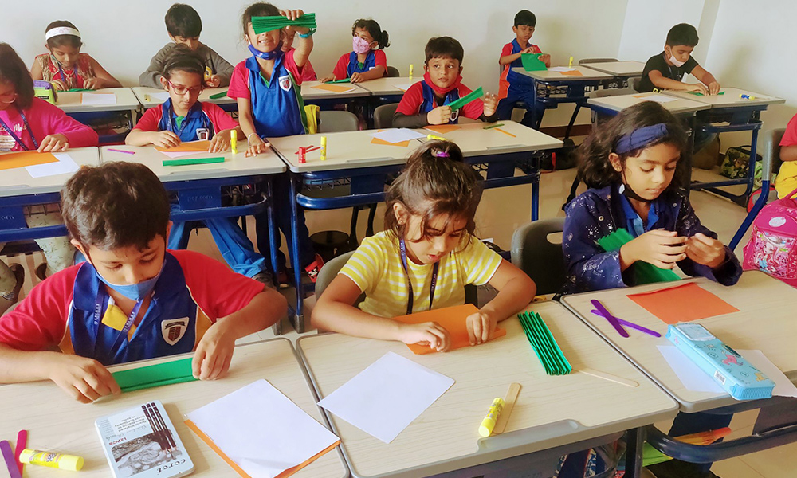
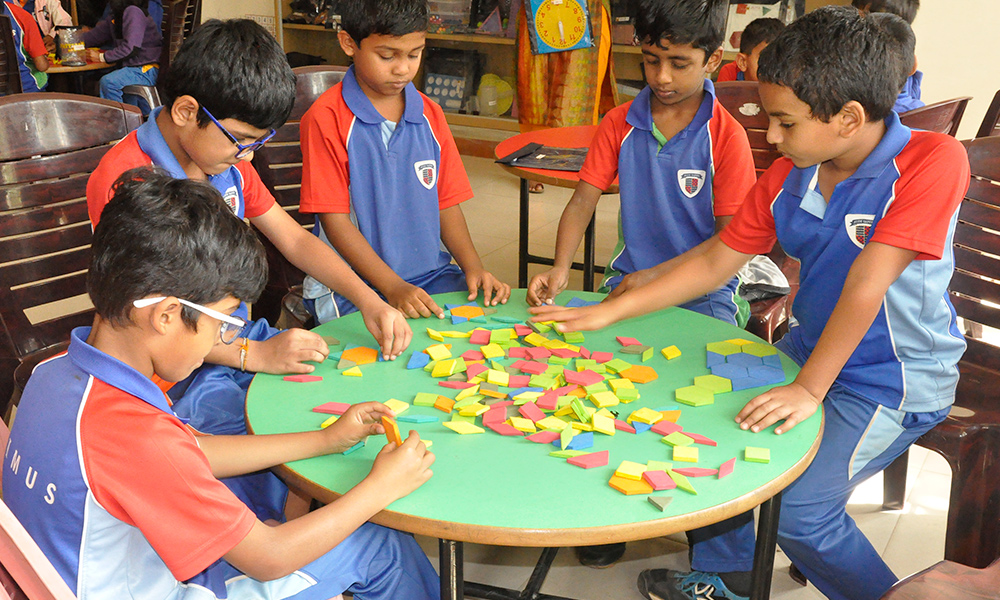
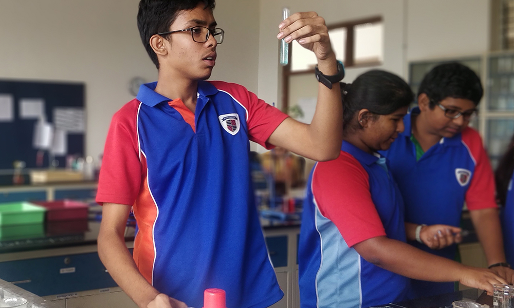
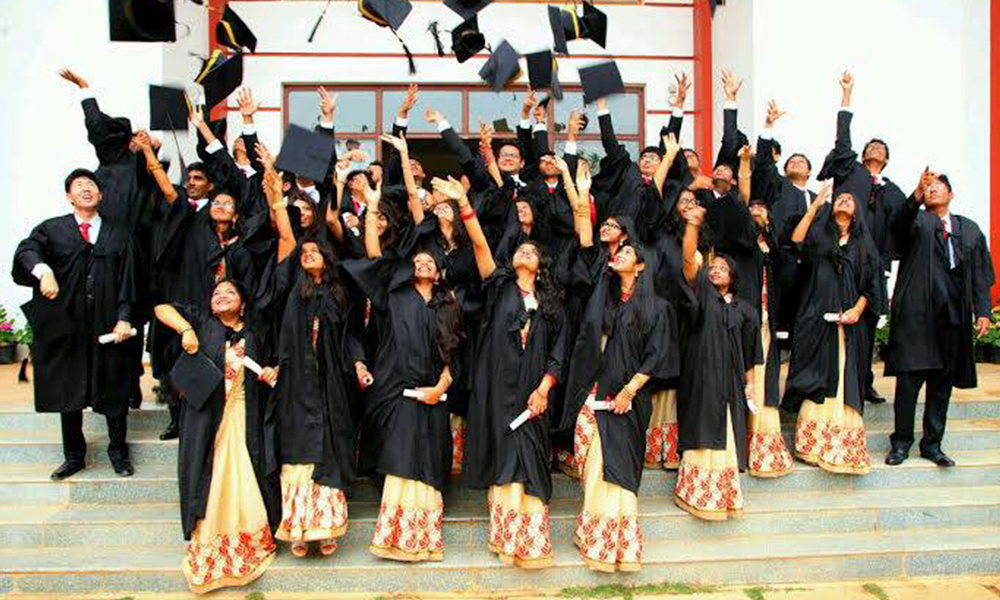

Academics
|  |  |  |  |
Pre-PrimaryAt Primus, we believe the purpose of education goes beyond just learning to read, write, memorize and pass examinations in order to get a secure job in the future. Learning is all about being a good critical thinker, a good team player and being empathetic towards society. |
Primary Children in Primary School are provided with learning opportunities to develop their full potential and prepare them to meet the challenges of the 21st century. We follow a student-centric approach that enables us to celebrate the uniqueness of each budding scholar. |
SecondaryAs the learner has gained mastery over basic concepts underlying each subject area in the primary years, the learner is now ready to meet the rigour of the academic programme and to connect learning with real-world situations. Primus offers IGCSE and ICSE curriculum. |
High school Primus offer Cambridge International AS and A Levels in Grades 11 and 12. This is a continuation of the IGCSE programme. It is recognised and preferred around the world by schools and universities. Primus offers students Science & Commerce streams to pursue their career aspirations. |